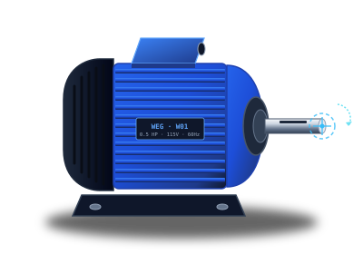

Objetivo del Sistema
ÓPTIMO EN RANGO
FACTOR DE POTENCIA
0.974
cos φ
•
φ = 13.0°
Régimen Angular:
ATRASO - 60 Hz
Δt Cruce por Cero:
0.60 ms
Meta: 0.950 – 0.990
Cumple Norma CFE
BANCO 1:2:4
Zero-Cross MOC3063 + TRIAC BTA16
105 µF
Capacitancia activa
D4 · 15 µF
(Bit 0)
QC1 = 81.4 VAR · Ajuste Fino
ON
D5 · 30 µF
(Bit 1)
QC2 = 162.9 VAR · Medio
ON
D6 · 60 µF
(Bit 2)
QC3 = 325.7 VAR · Carga Base
ON
Protección Descarga RC (30s):
DISPONIBLE
MOTOR WEG W01 — 0.5 HP

⚙
1735 RPM
Carga:
En Vacío
P útil:
130 W
I nominal:
8.24 A
0.5 HP · 60 Hz
115 / 120 V AC monofásico
TENSIÓN
A0
120.0
V
60.0 Hz
±0.2 V
CORRIENTE
A1
1.11
A
-78%
Pico:
13.8 A
ACTIVA
Real
130.0
W
Carga:
En Vacío
REACTIVA
ATRASO
30.0
VAR
Qm: 600
Qc: -570
OSCILOSCOPIO
60 Hz
CH1 · Tensión
CH2 · Corriente
CH1: 339.4 Vp-p
CH2: 3.1 Ap-p (1.11 Arms)
Δt: 0.60 ms (13.0°)
Base: 2.0 ms/div
fs = 1920 Hz (32 m/c)
Trigger: v(t) = 0
Sistema protegido
Sensores A0/A1: OK
Zero-Cross: ACTIVO
Descarga 30s: ARMADA
0 críticas
0 advertencias